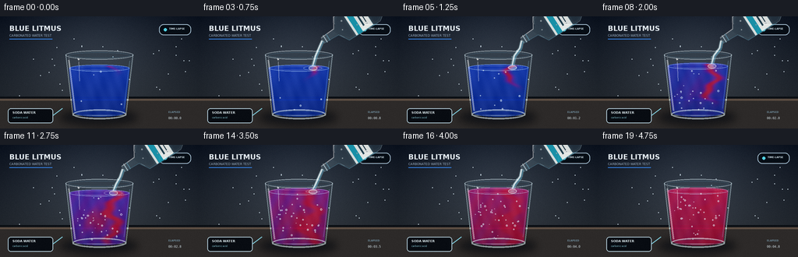
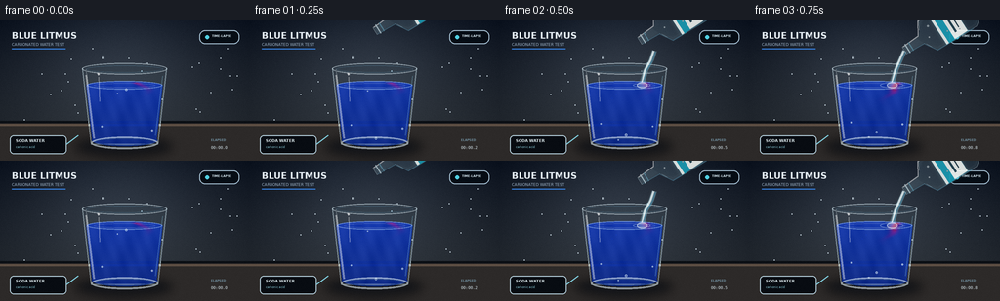

CODING AGENTS AS PIXEL WORLD MODELS
traex/GPT-5.6-Sol · phygen_148
点击播放 · 原生 RGB 像素
逐轮保存的候选
回放视频、检查图与代码变化。
每份候选均可单独播放。实际图片检查记录在下方工具轨迹中。
候选 01播放与检查图
点击播放 · 原生 RGB 像素


展开代码变化
--- 上一保存版本
+++ 本次保存版本
@@ -0,0 +1,256 @@
+from pathlib import Path
+import math
+import numpy as np
+from PIL import Image, ImageDraw, ImageFont, ImageFilter
+import artifact_io
+
+CASE_DIR = Path(__file__).resolve().parent
+W, H, N, FPS = 256, 144, 20, 4.0
+S = 3
+WW, HH = W*S, H*S
+RNG = np.random.default_rng(148)
+
+try:
+ FONT_BOLD = "/usr/share/fonts/truetype/dejavu/DejaVuSans-Bold.ttf"
+ FONT_REG = "/usr/share/fonts/truetype/dejavu/DejaVuSans.ttf"
+ FONT_MONO = "/usr/share/fonts/truetype/dejavu/DejaVuSansMono.ttf"
+except Exception:
+ FONT_BOLD = FONT_REG = FONT_MONO = None
+
+def font(path, size):
+ try: return ImageFont.truetype(path, size*S)
+ except Exception: return ImageFont.load_default()
+
+def smstep(a, b, x):
+ z = np.clip((x-a)/(b-a), 0, 1)
+ return z*z*(3-2*z)
+
+def poly(draw, pts, **kw):
+ draw.polygon([(int(x*S), int(y*S)) for x,y in pts], **kw)
+
+def line(draw, pts, **kw):
+ draw.line([(int(x*S), int(y*S)) for x,y in pts], **kw)
+
+def ellipse(draw, box, **kw):
+ draw.ellipse(tuple(int(v*S) for v in box), **kw)
+
+def rounded(draw, box, r, **kw):
+ draw.rounded_rectangle(tuple(int(v*S) for v in box), radius=int(r*S), **kw)
+
+def add_glow(im, layer, radius=3, strength=1.0):
+ blur = layer.filter(ImageFilter.GaussianBlur(radius*S))
+ if strength < 1:
+ a = blur.getchannel('A').point(lambda x: int(x*strength))
+ blur.putalpha(a)
+ return Image.alpha_composite(im, blur)
+
+# Stable microtexture and tiny background glints.
+noise_base = RNG.normal(0, 1, (HH, WW)).astype(np.float32)
+dust = [(int(RNG.integers(7,249)), int(RNG.integers(24,103)), RNG.choice([8,10,13])) for _ in range(30)]
+bubble_seed = [(float(RNG.uniform(98,158)), float(RNG.uniform(64,122)), float(RNG.uniform(.55,1.55)), float(RNG.uniform(0,20)), float(RNG.uniform(.45,1.15))) for _ in range(38)]
+
+# coordinate fields for liquid rendering at supersampled resolution
+Y, X = np.mgrid[0:HH, 0:WW].astype(np.float32)
+xb, yb = X/S, Y/S
+
+frames=[]
+for k in range(N):
+ t = k/(N-1)
+ # Cinematic cool lab backdrop with warm bench.
+ yy = np.linspace(0,1,HH)[:,None]
+ xx = np.linspace(0,1,WW)[None,:]
+ top = np.array([24,31,43.], np.float32)
+ bot = np.array([48,53,58.], np.float32)
+ arr = top[None,None,:]*(1-yy[:,:,None]) + bot[None,None,:]*yy[:,:,None]
+ arr = np.broadcast_to(arr,(HH,WW,3)).copy()
+ # soft pool of neutral light behind the experiment
+ glow = np.exp(-(((xx-.48)/.42)**2 + ((yy-.34)/.65)**2)*2.0)
+ arr += glow[:,:,None]*np.array([17,19,21])[None,None,:]
+ # vignette and film texture
+ vig = np.clip(((xx-.5)/.72)**2 + ((yy-.48)/.78)**2,0,1)
+ arr -= vig[:,:,None]*18
+ arr += noise_base[:,:,None]*1.4
+ arr = np.uint8(np.clip(arr,0,255))
+ im = Image.fromarray(arr,'RGB').convert('RGBA')
+ d = ImageDraw.Draw(im,'RGBA')
+
+ # backsplash lines and very subdued chemistry marks
+ d.rectangle((0, 103*S, WW, HH), fill=(45,42,41,255))
+ d.rectangle((0, 103*S, WW, 105*S), fill=(11,15,20,110))
+ d.rectangle((0, 106*S, WW, 108*S), fill=(93,78,67,30))
+ for x,y,a in dust:
+ ellipse(d,(x-.35,y-.35,x+.35,y+.35),fill=(210,225,235,a))
+ # glass cast shadow on bench
+ shadow = Image.new('RGBA',(WW,HH),(0,0,0,0)); sd=ImageDraw.Draw(shadow,'RGBA')
+ ellipse(sd,(76,119,177,140),fill=(0,5,13,150))
+ shadow=shadow.filter(ImageFilter.GaussianBlur(5*S)); im=Image.alpha_composite(im,shadow)
+
+ d=ImageDraw.Draw(im,'RGBA')
+ # Typography, deliberately quiet so the chemistry remains central.
+ d.text((12*S,10*S),"BLUE LITMUS",font=font(FONT_BOLD,9),fill=(231,239,246,235),stroke_width=0)
+ d.text((12*S,22*S),"CARBONATED WATER TEST",font=font(FONT_REG,4),fill=(153,173,193,210))
+ d.line((12*S,29*S,67*S,29*S),fill=(55,132,232,150),width=S)
+ rounded(d,(204,10,245,24),6,fill=(6,13,21,130),outline=(160,186,204,65),width=S)
+ ellipse(d,(210,15,214,19),fill=(81,209,227,235))
+ d.text((217*S,14*S),"TIME-LAPSE",font=font(FONT_BOLD,3),fill=(210,228,237,235))
+
+ # rear glass contours
+ glass = Image.new('RGBA',(WW,HH),(0,0,0,0)); gd=ImageDraw.Draw(glass,'RGBA')
+ # faint body/refraction
+ poly(gd,[(84,49),(171,49),(162,127),(93,127)],fill=(180,221,239,10),outline=(206,234,247,80))
+ ellipse(gd,(84,43.8,171,55.5),fill=(151,209,237,11),outline=(225,244,252,135),width=S)
+ ellipse(gd,(88,46,167,53.8),outline=(107,166,196,60),width=S)
+ # rear highlight
+ line(gd,[(88,50),(96,124)],fill=(235,250,255,65),width=S)
+ im=Image.alpha_composite(im,glass)
+
+ # Liquid level rises while soda is being added.
+ pour = smstep(1.2,3.2,k) * (1-smstep(16.2,18.2,k))
+ level_y = 66.5 - 7.2*smstep(2,17,k)
+ liquid_mask = Image.new('L',(WW,HH),0); md=ImageDraw.Draw(liquid_mask)
+ # tapered vessel interior
+ poly(md,[(88.5,level_y),(166.5,level_y),(160.2,124.5),(94.5,124.5)],fill=235)
+ ellipse(md,(94,117,161,129),fill=235)
+ ellipse(md,(88.5,level_y-4.4,166.5,level_y+4.5),fill=245)
+
+ # Acid concentration: pouring plume first, then stirred diffusion throughout.
+ age = max(0.0,k-2.0)
+ global_mix = float(smstep(5.0,19.0,k))*0.93
+ # sinuous descending plume beneath impact point
+ center = 145 + 7*np.sin((yb-level_y)*0.155 + k*.70) + 2.8*np.sin((yb-level_y)*.39-k*.55)
+ depth = max(0, age*7.2)
+ vertical_gate = 1/(1+np.exp((yb-(level_y+depth))/2.8))
+ plume = np.exp(-((xb-center)/(4.0+age*.38))**2)*vertical_gate
+ plume *= (yb>level_y-3)
+ # broad curls on alternating sides imply convection and accelerated timelapse.
+ curl1 = np.exp(-(((xb-(135+10*np.sin(k*.45)))/17)**2 + ((yb-(78+age*2.1))/17)**2))
+ curl2 = np.exp(-(((xb-(119-8*np.sin(k*.34)))/22)**2 + ((yb-(105-age*.7))/15)**2))
+ eddy = .58*curl1 + .42*curl2
+ concentration = np.clip(global_mix + (1-global_mix)*(.92*plume + smstep(5,14,k)*eddy),0,1)
+ # Fine organic folds at the boundary, not random frame noise.
+ concentration += .055*np.sin(xb*.34+yb*.18+k*.72)*np.clip(concentration*(1-concentration)*4,0,1)
+ concentration=np.clip(concentration,0,1)
+
+ blue=np.array([16,55,184.],np.float32)
+ violet=np.array([100,29,164.],np.float32)
+ red=np.array([194,19,67.],np.float32)
+ c=concentration[...,None]
+ first=np.clip(c*2,0,1); second=np.clip((c-.5)*2,0,1)
+ rgb=blue*(1-first)+violet*first
+ rgb=rgb*(1-second)+red*second
+ # depth, caustic striations and surface light
+ depthshade=np.clip((yb-level_y)/75,0,1)[...,None]
+ rgb *= (1-.22*depthshade)
+ caustic=(4*np.sin(xb*.22+yb*.08)+3*np.sin(xb*.47-yb*.16+k*.16))[...,None]
+ rgb += caustic
+ alpha=np.array(liquid_mask,dtype=np.float32)[...,None]/255
+ liquid_rgba=np.concatenate([np.clip(rgb,0,255),alpha*238],axis=2).astype(np.uint8)
+ liquid=Image.fromarray(liquid_rgba,'RGBA')
+ im=Image.alpha_composite(im,liquid)
+
+ # liquid surface meniscus and impact ripples
+ surf=Image.new('RGBA',(WW,HH),(0,0,0,0)); su=ImageDraw.Draw(surf,'RGBA')
+ ellipse(su,(89,level_y-4.2,166,level_y+4.3),outline=(190,224,250,115),width=S)
+ ellipse(su,(96,level_y-2.3,159,level_y+2.7),outline=(255,255,255,35),width=S)
+ if k>=2 and k<=17:
+ ripple=max(1,(k%4)+1)
+ ellipse(su,(145-ripple*3,level_y-ripple*.65,145+ripple*3,level_y+ripple*.65),outline=(220,244,255,80),width=S)
+ im=Image.alpha_composite(im,surf)
+
+ # Bubbles within the solution. More appear after soda begins pouring.
+ bubbles=Image.new('RGBA',(WW,HH),(0,0,0,0)); bd=ImageDraw.Draw(bubbles,'RGBA')
+ count = 4 + int(34*smstep(2,13,k))
+ for j,(bx,by,br,phase,speed) in enumerate(bubble_seed[:count]):
+ # deterministic upward motion with recycling below the surface
+ bottom=123-level_y
+ yyb = level_y+3 + ((by-level_y - (k-2)*speed*3.0 + phase) % max(8,bottom-3))
+ bxx=bx+1.3*math.sin(k*.55+phase+j)
+ rr=br*(.78+.15*math.sin(j*2.2+k*.3))
+ if yyb>level_y+2:
+ ellipse(bd,(bxx-rr,yyb-rr,bxx+rr,yyb+rr),outline=(225,246,255,145),width=max(1,S))
+ ellipse(bd,(bxx-rr*.3,yyb-rr*.55,bxx+rr*.05,yyb-rr*.2),fill=(255,255,255,165))
+ im=Image.alpha_composite(im,bubbles)
+
+ # Front glass reflections, heavy base and highlights.
+ front=Image.new('RGBA',(WW,HH),(0,0,0,0)); fd=ImageDraw.Draw(front,'RGBA')
+ line(fd,[(84.5,49),(93.5,127),(161.5,127),(170.5,49)],fill=(219,241,249,105),width=S)
+ line(fd,[(88,56),(96,121)],fill=(255,255,255,105),width=2*S)
+ line(fd,[(166.5,57),(159,118)],fill=(141,204,230,70),width=S)
+ ellipse(fd,(93,119.5,162,132),outline=(232,246,250,145),width=2*S)
+ ellipse(fd,(97,121,158,128.5),outline=(75,112,133,80),width=S)
+ # sharp moving glints
+ line(fd,[(101,58),(102,83)],fill=(255,255,255,90),width=S)
+ line(fd,[(100,54),(101,56)],fill=(255,255,255,180),width=2*S)
+ im=Image.alpha_composite(im,front)
+
+ # Pour stream, behind the bottle and in front of glass.
+ if 2 <= k <= 17:
+ stream=Image.new('RGBA',(WW,HH),(0,0,0,0)); st=ImageDraw.Draw(stream,'RGBA')
+ mx,my=158,31
+ endpoint=(145,level_y-1)
+ # luminous colorless water, slightly wavering
+ wob=1.2*math.sin(k*1.7)
+ pts=[(mx,my),(155+wob,41),(149-wob*.4,51),endpoint]
+ line(st,pts,fill=(169,229,246,70),width=5*S)
+ line(st,[(mx-1,my), (154+wob,41),(148-wob*.4,51),endpoint],fill=(239,253,255,205),width=max(S,2*S))
+ line(st,[(mx+1,my+1),(156+wob,42),(150-wob*.4,51),(146,level_y-2)],fill=(83,183,224,120),width=S)
+ # impact sparkle / foam
+ ellipse(st,(140,level_y-3,151,level_y+3),fill=(229,250,255,55),outline=(248,255,255,150),width=S)
+ im=add_glow(im,stream,2,.45); im=Image.alpha_composite(im,stream)
+
+ # Clear soda bottle enters, remains tipped, then leaves.
+ if k>=1 and k<=18:
+ enter=float(smstep(1,3,k)); leave=float(smstep(16.5,19,k))
+ mouth=np.array([158+leave*34-(1-enter)*30,31-(1-enter)*20-leave*10],float)
+ u=np.array([.84,-.54]); v=np.array([.54,.84])
+ # local helper from axis distance and perpendicular offset
+ def P(a,b): return tuple(mouth+u*a+v*b)
+ bottle=Image.new('RGBA',(WW,HH),(0,0,0,0)); bo=ImageDraw.Draw(bottle,'RGBA')
+ outline=[P(0,-4),P(22,-5),P(29,-18),P(75,-19),P(82,-14),P(83,14),P(76,19),P(29,18),P(22,5),P(0,4)]
+ poly(bo,outline,fill=(175,223,237,34),outline=(222,244,250,155))
+ # carbonated water within the tilted bottle
+ waterpoly=[P(18,-3),P(31,-15),P(73,-16),P(79,-11),P(80,12),P(75,16),P(31,15),P(21,4)]
+ poly(bo,waterpoly,fill=(166,221,238,27))
+ # bottle edge thickness, neck rings
+ line(bo,[P(1,-4),P(20,-5),P(28,-18),P(73,-19)],fill=(255,255,255,130),width=S)
+ line(bo,[P(1,4),P(21,5),P(29,18),P(72,19)],fill=(105,172,199,100),width=S)
+ line(bo,[P(4,-5),P(4,5)],fill=(222,245,252,165),width=S)
+ line(bo,[P(8,-5),P(8,5)],fill=(126,202,227,120),width=S)
+ # label quadrilateral
+ label=[P(40,-18.2),P(66,-18.2),P(66,18.2),P(40,18.2)]
+ poly(bo,label,fill=(238,242,239,225),outline=(103,170,185,210))
+ # Label writing aligned approximately with bottle axis via separate rotated patch.
+ # Geometric teal stripe is legible even at thumbnail scale.
+ poly(bo,[P(43,-18.5),P(50,-18.5),P(50,18.5),P(43,18.5)],fill=(25,153,177,230))
+ # lettering represented along axis; full caption also appears in lower callout
+ line(bo,[P(55,-12),P(55,12)],fill=(27,62,77,210),width=2*S)
+ line(bo,[P(60,-10),P(60,10)],fill=(27,62,77,150),width=S)
+ # bubbles trapped in bottle
+ for a,b,r in [(34,-8,1),(48,7,.7),(70,-5,.8),(60,12,.6),(29,2,.65)]:
+ ellipse(bo,(*P(a,b),*P(a,b)),fill=(0,0,0,0)) if False else None
+ q=P(a,b); ellipse(bo,(q[0]-r,q[1]-r,q[0]+r,q[1]+r),outline=(243,255,255,125),width=S)
+ im=add_glow(im,bottle,2,.25); im=Image.alpha_composite(im,bottle)
+
+ # Bottom callout / elapsed time. Kept outside the vessel.
+ d=ImageDraw.Draw(im,'RGBA')
+ rounded(d,(10,118,68,137),4,fill=(8,12,18,145),outline=(177,202,214,42),width=S)
+ d.text((16*S,121*S),"SODA WATER",font=font(FONT_BOLD,4),fill=(224,237,241,230))
+ d.text((16*S,128*S),"carbonic acid",font=font(FONT_REG,3),fill=(130,194,207,225))
+ # Tiny pointer line to pouring region
+ d.line((68*S,127*S,80*S,118*S),fill=(126,201,217,90),width=S)
+ # Counter right
+ counter=f"00:{k/FPS:04.1f}"
+ d.text((216*S,128*S),counter,font=font(FONT_MONO,4),fill=(214,229,236,225))
+ d.text((216*S,121*S),"ELAPSED",font=font(FONT_BOLD,3),fill=(113,144,160,220))
+
+ # Downsample for polished antialiasing, add subtle final RGB grain.
+ out=im.convert('RGB').resize((W,H),Image.Resampling.LANCZOS)
+ oa=np.asarray(out).astype(np.int16)
+ grain=RNG.normal(0,.6,(H,W,1))
+ oa=np.clip(oa+grain,0,255).astype(np.uint8)
+ frames.append(oa)
+
+frames=np.stack(frames,axis=0)
+assert frames.shape==(N,H,W,3) and frames.dtype==np.uint8
+artifact_io.save(frames, CASE_DIR)
+print(f"saved {len(frames)} RGB frames at {W}x{H}, {FPS} fps")
可观测工具轨迹
实际执行的命令与返回图片。
命令 1exit 0
/bin/bash -lc "cat prompt.txt && printf '\\n--- GENERATION_RULES.md ---\\n' && cat GENERATION_RULES.md"
命令 2exit 0
/bin/bash -lc "printf '%s\\n' '--- task_spec.json ---' && cat task_spec.json && printf '%s\\n' '--- files ---' && find . -maxdepth 2 -type f -printf '%p %s bytes\\n' | sort"
命令 3exit 0
/bin/bash -lc "command -v ffmpeg || true; command -v python3 || true; python3 - <<'PY' mods=['PIL','numpy','cv2','imageio','scipy'] for m in mods: try: x=__import__(m); print(m, 'OK', getattr(x,'__version__','')) except Exception as e: print(m,'NO',e) PY"
命令 4exit 0
/bin/bash -lc 'cat artifact_io.py'
命令 5exit 0
/bin/bash -lc "cat > generate.py <<'PY'
from pathlib import Path
import math
import numpy as np
from PIL import Image, ImageDraw, ImageFont, ImageFilter
import artifact_io
CASE_DIR = Path(__file__).resolve().parent
W, H, N, FPS = 256, 144, 20, 4.0
S = 3
WW, HH = W*S, H*S
RNG = np.random.default_rng(148)
try:
FONT_BOLD = \"/usr/share/fonts/truetype/dejavu/DejaVuSans-Bold.ttf\"
FONT_REG = \"/usr/share/fonts/truetype/dejavu/DejaVuSans.ttf\"
FONT_MONO = \"/usr/share/fonts/truetype/dejavu/DejaVuSansMono.ttf\"
except Exception:
FONT_BOLD = FONT_REG = FONT_MONO = None
def font(path, size):
try: return ImageFont.truetype(path, size*S)
except Exception: return ImageFont.load_default()
def smstep(a, b, x):
z = np.clip((x-a)/(b-a), 0, 1)
return z*z*(3-2*z)
def poly(draw, pts, **kw):
draw.polygon([(int(x*S), int(y*S)) for x,y in pts], **kw)
def line(draw, pts, **kw):
draw.line([(int(x*S), int(y*S)) for x,y in pts], **kw)
def ellipse(draw, box, **kw):
draw.ellipse(tuple(int(v*S) for v in box), **kw)
def rounded(draw, box, r, **kw):
draw.rounded_rectangle(tuple(int(v*S) for v in box), radius=int(r*S), **kw)
def add_glow(im, layer, radius=3, strength=1.0):
blur = layer.filter(ImageFilter.GaussianBlur(radius*S))
if strength < 1:
a = blur.getchannel('A').point(lambda x: int(x*strength))
blur.putalpha(a)
return Image.alpha_composite(im, blur)
# Stable microtexture and tiny background glints.
noise_base = RNG.normal(0, 1, (HH, WW)).astype(np.float32)
dust = [(int(RNG.integers(7,249)), int(RNG.integers(24,103)), RNG.choice([8,10,13])) for _ in range(30)]
bubble_seed = [(float(RNG.uniform(98,158)), float(RNG.uniform(64,122)), float(RNG.uniform(.55,1.55)), float(RNG.uniform(0,20)), float(RNG.uniform(.45,1.15))) for _ in range(38)]
# coordinate fields for liquid rendering at supersampled resolution
Y, X = np.mgrid[0:HH, 0:WW].astype(np.float32)
xb, yb = X/S, Y/S
frames=[]
for k in range(N):
t = k/(N-1)
# Cinematic cool lab backdrop with warm bench.
yy = np.linspace(0,1,HH)[:,None]
xx = np.linspace(0,1,WW)[None,:]
top = np.array([24,31,43.], np.float32)
bot = np.array([48,53,58.], np.float32)
arr = top[None,None,:]*(1-yy[:,:,None]) + bot[None,None,:]*yy[:,:,None]
arr = np.broadcast_to(arr,(HH,WW,3)).copy()
# soft pool of neutral light behind the experiment
glow = np.exp(-(((xx-.48)/.42)**2 + ((yy-.34)/.65)**2)*2.0)
arr += glow[:,:,None]*np.array([17,19,21])[None,None,:]
# vignette and film texture
vig = np.clip(((xx-.5)/.72)**2 + ((yy-.48)/.78)**2,0,1)
arr -= vig[:,:,None]*18
arr += noise_base[:,:,None]*1.4
arr = np.uint8(np.clip(arr,0,255))
im = Image.fromarray(arr,'RGB').convert('RGBA')
d = ImageDraw.Draw(im,'RGBA')
# backsplash lines and very subdued chemistry marks
d.rectangle((0, 103*S, WW, HH), fill=(45,42,41,255))
d.rectangle((0, 103*S, WW, 105*S), fill=(11,15,20,110))
d.rectangle((0, 106*S, WW, 108*S), fill=(93,78,67,30))
for x,y,a in dust:
ellipse(d,(x-.35,y-.35,x+.35,y+.35),fill=(210,225,235,a))
# glass cast shadow on bench
shadow = Image.new('RGBA',(WW,HH),(0,0,0,0)); sd=ImageDraw.Draw(shadow,'RGBA')
ellipse(sd,(76,119,177,140),fill=(0,5,13,150))
shadow=shadow.filter(ImageFilter.GaussianBlur(5*S)); im=Image.alpha_composite(im,shadow)
d=ImageDraw.Draw(im,'RGBA')
# Typography, deliberately quiet so the chemistry remains central.
d.text((12*S,10*S),\"BLUE LITMUS\",font=font(FONT_BOLD,9),fill=(231,239,246,235),stroke_width=0)
d.text((12*S,22*S),\"CARBONATED WATER TEST\",font=font(FONT_REG,4),fill=(153,173,193,210))
d.line((12*S,29*S,67*S,29*S),fill=(55,132,232,150),width=S)
rounded(d,(204,10,245,24),6,fill=(6,13,21,130),outline=(160,186,204,65),width=S)
ellipse(d,(210,15,214,19),fill=(81,209,227,235))
d.text((217*S,14*S),\"TIME-LAPSE\",font=font(FONT_BOLD,3),fill=(210,228,237,235))
# rear glass contours
glass = Image.new('RGBA',(WW,HH),(0,0,0,0)); gd=ImageDraw.Draw(glass,'RGBA')
# faint body/refraction
poly(gd,[(84,49),(171,49),(162,127),(93,127)],fill=(180,221,239,10),outline=(206,234,247,80))
ellipse(gd,(84,43.8,171,55.5),fill=(151,209,237,11),outline=(225,244,252,135),width=S)
ellipse(gd,(88,46,167,53.8),outline=(107,166,196,60),width=S)
# rear highlight
line(gd,[(88,50),(96,124)],fill=(235,250,255,65),width=S)
im=Image.alpha_composite(im,glass)
# Liquid level rises while soda is being added.
pour = smstep(1.2,3.2,k) * (1-smstep(16.2,18.2,k))
level_y = 66.5 - 7.2*smstep(2,17,k)
liquid_mask = Image.new('L',(WW,HH),0); md=ImageDraw.Draw(liquid_mask)
# tapered vessel interior
poly(md,[(88.5,level_y),(166.5,level_y),(160.2,124.5),(94.5,124.5)],fill=235)
ellipse(md,(94,117,161,129),fill=235)
ellipse(md,(88.5,level_y-4.4,166.5,level_y+4.5),fill=245)
# Acid concentration: pouring plume first, then stirred diffusion throughout.
age = max(0.0,k-2.0)
global_mix = float(smstep(5.0,19.0,k))*0.93
# sinuous descending plume beneath impact point
center = 145 + 7*np.sin((yb-level_y)*0.155 + k*.70) + 2.8*np.sin((yb-level_y)*.39-k*.55)
depth = max(0, age*7.2)
vertical_gate = 1/(1+np.exp((yb-(level_y+depth))/2.8))
plume = np.exp(-((xb-center)/(4.0+age*.38))**2)*vertical_gate
plume *= (yb>level_y-3)
# broad curls on alternating sides imply convection and accelerated timelapse.
curl1 = np.exp(-(((xb-(135+10*np.sin(k*.45)))/17)**2 + ((yb-(78+age*2.1))/17)**2))
curl2 = np.exp(-(((xb-(119-8*np.sin(k*.34)))/22)**2 + ((yb-(105-age*.7))/15)**2))
eddy = .58*curl1 + .42*curl2
concentration = np.clip(global_mix + (1-global_mix)*(.92*plume + smstep(5,14,k)*eddy),0,1)
# Fine organic folds at the boundary, not random frame noise.
concentration += .055*np.sin(xb*.34+yb*.18+k*.72)*np.clip(concentration*(1-concentration)*4,0,1)
concentration=np.clip(concentration,0,1)
blue=np.array([16,55,184.],np.float32)
violet=np.array([100,29,164.],np.float32)
red=np.array([194,19,67.],np.float32)
c=concentration[...,None]
first=np.clip(c*2,0,1); second=np.clip((c-.5)*2,0,1)
rgb=blue*(1-first)+violet*first
rgb=rgb*(1-second)+red*second
# depth, caustic striations and surface light
depthshade=np.clip((yb-level_y)/75,0,1)[...,None]
rgb *= (1-.22*depthshade)
caustic=(4*np.sin(xb*.22+yb*.08)+3*np.sin(xb*.47-yb*.16+k*.16))[...,None]
rgb += caustic
alpha=np.array(liquid_mask,dtype=np.float32)[...,None]/255
liquid_rgba=np.concatenate([np.clip(rgb,0,255),alpha*238],axis=2).astype(np.uint8)
liquid=Image.fromarray(liquid_rgba,'RGBA')
im=Image.alpha_composite(im,liquid)
# liquid surface meniscus and impact ripples
surf=Image.new('RGBA',(WW,HH),(0,0,0,0)); su=ImageDraw.Draw(surf,'RGBA')
ellipse(su,(89,level_y-4.2,166,level_y+4.3),outline=(190,224,250,115),width=S)
ellipse(su,(96,level_y-2.3,159,level_y+2.7),outline=(255,255,255,35),width=S)
if k>=2 and k<=17:
ripple=max(1,(k%4)+1)
ellipse(su,(145-ripple*3,level_y-ripple*.65,145+ripple*3,level_y+ripple*.65),outline=(220,244,255,80),width=S)
im=Image.alpha_composite(im,surf)
# Bubbles within the solution. More appear after soda begins pouring.
bubbles=Image.new('RGBA',(WW,HH),(0,0,0,0)); bd=ImageDraw.Draw(bubbles,'RGBA')
count = 4 + int(34*smstep(2,13,k))
for j,(bx,by,br,phase,speed) in enumerate(bubble_seed[:count]):
# deterministic upward motion with recycling below the surface
bottom=123-level_y
yyb = level_y+3 + ((by-level_y - (k-2)*speed*3.0 + phase) % max(8,bottom-3))
bxx=bx+1.3*math.sin(k*.55+phase+j)
rr=br*(.78+.15*math.sin(j*2.2+k*.3))
if yyb>level_y+2:
ellipse(bd,(bxx-rr,yyb-rr,bxx+rr,yyb+rr),outline=(225,246,255,145),width=max(1,S))
ellipse(bd,(bxx-rr*.3,yyb-rr*.55,bxx+rr*.05,yyb-rr*.2),fill=(255,255,255,165))
im=Image.alpha_composite(im,bubbles)
# Front glass reflections, heavy base and highlights.
front=Image.new('RGBA',(WW,HH),(0,0,0,0)); fd=ImageDraw.Draw(front,'RGBA')
line(fd,[(84.5,49),(93.5,127),(161.5,127),(170.5,49)],fill=(219,241,249,105),width=S)
line(fd,[(88,56),(96,121)],fill=(255,255,255,105),width=2*S)
line(fd,[(166.5,57),(159,118)],fill=(141,204,230,70),width=S)
ellipse(fd,(93,119.5,162,132),outline=(232,246,250,145),width=2*S)
ellipse(fd,(97,121,158,128.5),outline=(75,112,133,80),width=S)
# sharp moving glints
line(fd,[(101,58),(102,83)],fill=(255,255,255,90),width=S)
line(fd,[(100,54),(101,56)],fill=(255,255,255,180),width=2*S)
im=Image.alpha_composite(im,front)
# Pour stream, behind the bottle and in front of glass.
if 2 <= k <= 17:
stream=Image.new('RGBA',(WW,HH),(0,0,0,0)); st=ImageDraw.Draw(stream,'RGBA')
mx,my=158,31
endpoint=(145,level_y-1)
# luminous colorless water, slightly wavering
wob=1.2*math.sin(k*1.7)
pts=[(mx,my),(155+wob,41),(149-wob*.4,51),endpoint]
line(st,pts,fill=(169,229,246,70),width=5*S)
line(st,[(mx-1,my), (154+wob,41),(148-wob*.4,51),endpoint],fill=(239,253,255,205),width=max(S,2*S))
line(st,[(mx+1,my+1),(156+wob,42),(150-wob*.4,51),(146,level_y-2)],fill=(83,183,224,120),width=S)
# impact sparkle / foam
ellipse(st,(140,level_y-3,151,level_y+3),fill=(229,250,255,55),outline=(248,255,255,150),width=S)
im=add_glow(im,stream,2,.45); im=Image.alpha_composite(im,stream)
# Clear soda bottle enters, remains tipped, then leaves.
if k>=1 and k<=18:
enter=float(smstep(1,3,k)); leave=float(smstep(16.5,19,k))
mouth=np.array([158+leave*34-(1-enter)*30,31-(1-enter)*20-leave*10],float)
u=np.array([.84,-.54]); v=np.array([.54,.84])
# local helper from axis distance and perpendicular offset
def P(a,b): return tuple(mouth+u*a+v*b)
bottle=Image.new('RGBA',(WW,HH),(0,0,0,0)); bo=ImageDraw.Draw(bottle,'RGBA')
outline=[P(0,-4),P(22,-5),P(29,-18),P(75,-19),P(82,-14),P(83,14),P(76,19),P(29,18),P(22,5),P(0,4)]
poly(bo,outline,fill=(175,223,237,34),outline=(222,244,250,155))
# carbonated water within the tilted bottle
waterpoly=[P(18,-3),P(31,-15),P(73,-16),P(79,-11),P(80,12),P(75,16),P(31,15),P(21,4)]
poly(bo,waterpoly,fill=(166,221,238,27))
# bottle edge thickness, neck rings
line(bo,[P(1,-4),P(20,-5),P(28,-18),P(73,-19)],fill=(255,255,255,130),width=S)
line(bo,[P(1,4),P(21,5),P(29,18),P(72,19)],fill=(105,172,199,100),width=S)
line(bo,[P(4,-5),P(4,5)],fill=(222,245,252,165),width=S)
line(bo,[P(8,-5),P(8,5)],fill=(126,202,227,120),width=S)
# label quadrilateral
label=[P(40,-18.2),P(66,-18.2),P(66,18.2),P(40,18.2)]
poly(bo,label,fill=(238,242,239,225),outline=(103,170,185,210))
# Label writing aligned approximately with bottle axis via separate rotated patch.
# Geometric teal stripe is legible even at thumbnail scale.
poly(bo,[P(43,-18.5),P(50,-18.5),P(50,18.5),P(43,18.5)],fill=(25,153,177,230))
# lettering represented along axis; full caption also appears in lower callout
line(bo,[P(55,-12),P(55,12)],fill=(27,62,77,210),width=2*S)
line(bo,[P(60,-10),P(60,10)],fill=(27,62,77,150),width=S)
# bubbles trapped in bottle
for a,b,r in [(34,-8,1),(48,7,.7),(70,-5,.8),(60,12,.6),(29,2,.65)]:
ellipse(bo,(*P(a,b),*P(a,b)),fill=(0,0,0,0)) if False else None
q=P(a,b); ellipse(bo,(q[0]-r,q[1]-r,q[0]+r,q[1]+r),outline=(243,255,255,125),width=S)
im=add_glow(im,bottle,2,.25); im=Image.alpha_composite(im,bottle)
# Bottom callout / elapsed time. Kept outside the vessel.
d=ImageDraw.Draw(im,'RGBA')
rounded(d,(10,118,68,137),4,fill=(8,12,18,145),outline=(177,202,214,42),width=S)
d.text((16*S,121*S),\"SODA WATER\",font=font(FONT_BOLD,4),fill=(224,237,241,230))
d.text((16*S,128*S),\"carbonic acid\",font=font(FONT_REG,3),fill=(130,194,207,225))
# Tiny pointer line to pouring region
d.line((68*S,127*S,80*S,118*S),fill=(126,201,217,90),width=S)
# Counter right
counter=f\"00:{k/FPS:04.1f}\"
d.text((216*S,128*S),counter,font=font(FONT_MONO,4),fill=(214,229,236,225))
d.text((216*S,121*S),\"ELAPSED\",font=font(FONT_BOLD,3),fill=(113,144,160,220))
# Downsample for polished antialiasing, add subtle final RGB grain.
out=im.convert('RGB').resize((W,H),Image.Resampling.LANCZOS)
oa=np.asarray(out).astype(np.int16)
grain=RNG.normal(0,.6,(H,W,1))
oa=np.clip(oa+grain,0,255).astype(np.uint8)
frames.append(oa)
frames=np.stack(frames,axis=0)
assert frames.shape==(N,H,W,3) and frames.dtype==np.uint8
artifact_io.save(frames, CASE_DIR)
print(f\"saved {len(frames)} RGB frames at {W}x{H}, {FPS} fps\")
PY
python3 generate.py
ls -l pixels.npz inspection.png transition_check.png index.html frames/00.png frames/19.png"命令 6exit 0
/bin/bash -lc "command -v chafa || command -v viu || command -v jp2 || command -v img2txt || true; python3 -m py_compile generate.py artifact_io.py; find frames -maxdepth 1 -name '*.png' | wc -l"
命令 7exit 0
/bin/bash -lc "python3 - <<'PY'
from PIL import Image
import numpy as np
for k in [0,2,5,8,11,14,17,19]:
a=np.array(Image.open(f'frames/{k:02d}.png'))
roi=a[76:115,105:150]
# representative median and center
print(k,'center',a[95,127].tolist(),'roi_mean',roi.mean((0,1)).round(1).tolist(),'lum',round(roi.mean(),1))
# temporal difference and exact dimensions/mode
ims=[np.array(Image.open(f'frames/{k:02d}.png')) for k in range(20)]
for k in range(1,20):
print(k,round(np.abs(ims[k].astype(int)-ims[k-1]).mean(),2),end='; ')
print('\\n',Image.open('frames/00.png').mode,Image.open('frames/00.png').size)
z=np.load('pixels.npz')['pixels']; print('pixels',z.shape,z.dtype,'range',z.min(),z.max())
PY"保存候选 1 份；完成命令 7 次；可验证图片返回 0 张。原始 API 响应与完整日志保留在本地。